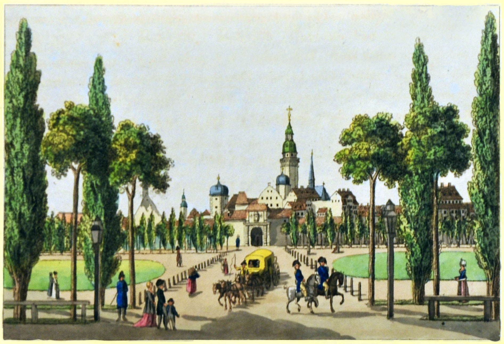
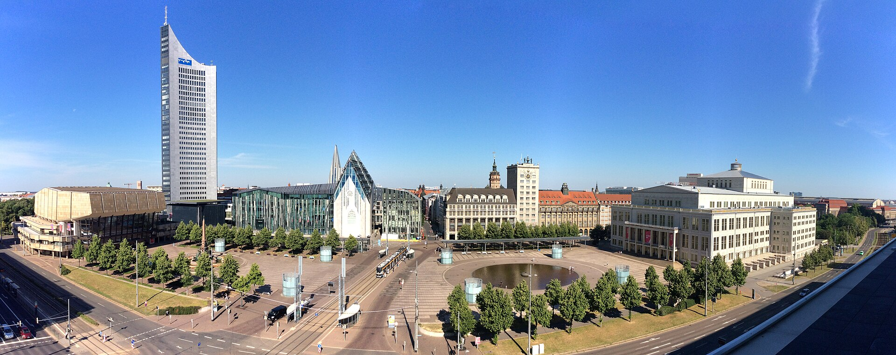
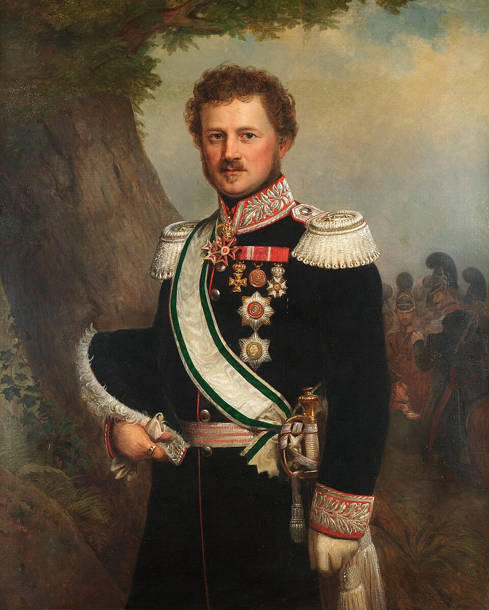
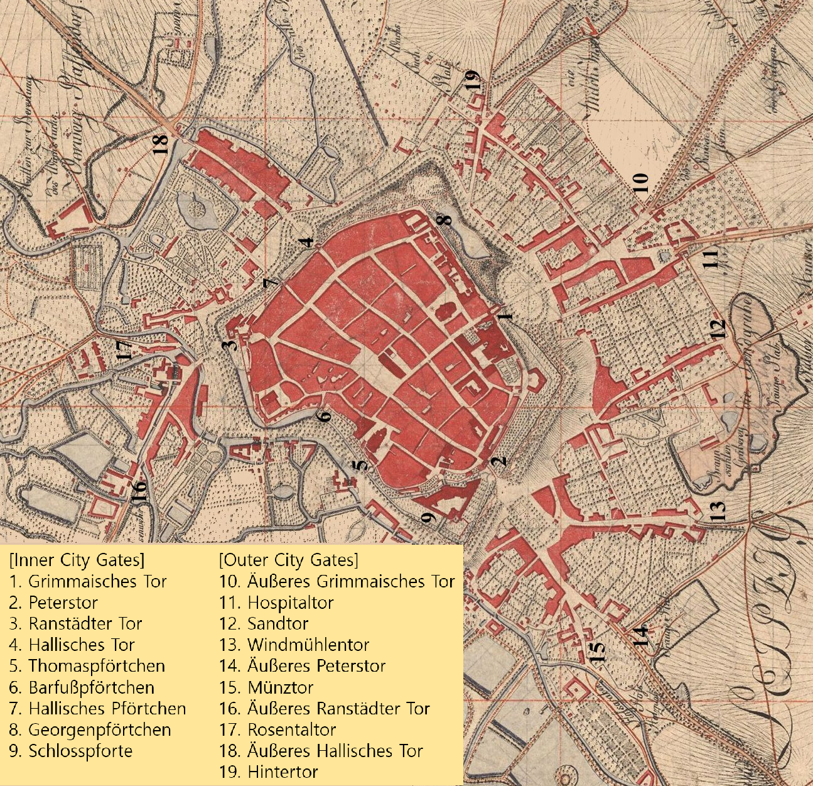
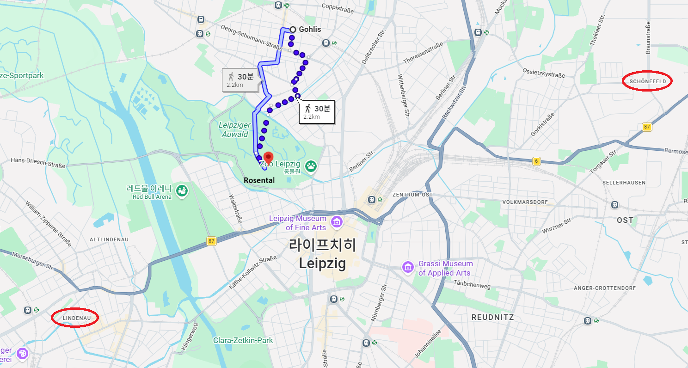
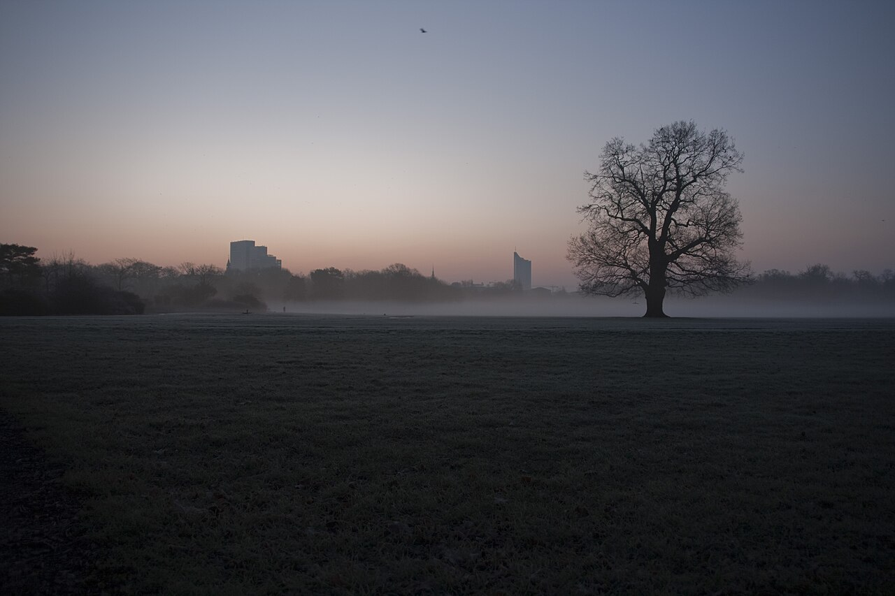
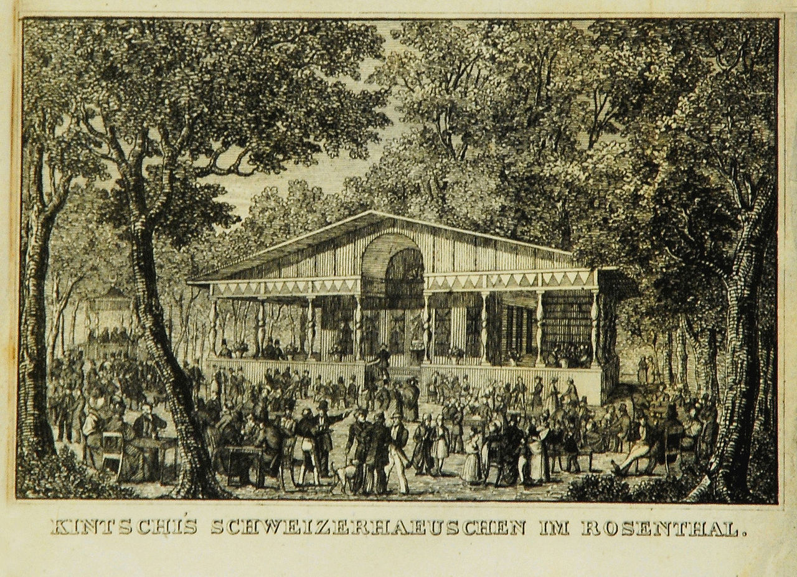

라이프치히 전투 (41) - 막힐수록 돌아가지 말라
게시: 2026-04-06T06:30:33+09:00
라이프치히의 외곽 지역에서 아무 승산이 없는 전투를 벌이며 내성 쪽으로 밀려날 때까지도, 그랑다르메 병사들은 무척이나 잘 싸우며 질서있게 후퇴했습니다. 가령 막도날 직속인 제11군단 소속 샤르팡티에(Charpentier)의 제36사단과 와 마르샹(Marchand)의 제39사단은 라이프치히 동부 외곽에서 뒤를 바싹 추격하는 뷜로의 프로이센군과 끈질기게 싸우며 라이프치히의 동쪽 내성문인 그리마 성문(Grimmaisches Tor)까지 잘 후퇴했습니다. 이게 만약 삼국지였다면 이 때 그리마 성문이 활짝 열리며 그랑다르메 병력이 쏟아져 나와, 추격하는 프로이센군을 강타하고 뿔뿔히 흩어놓았을 것입니다. 그러나 실제로는 그리마 성문은 굳게 닫힌 채로 있었습니다. 심지어 도망쳐온 두 사단 병사들이 문을 두들기고 소리를 질러대며 문을 열어달라고 해도 성문은 열리지 않았습니다. 그리마 성문을 지키던 병력은 바덴(Baden) 연대였는데, 이들은 어떠한 경우에도 성문을 열어주지 말라는 명령을 받은 상태였던 것입니다.

(1804년 경의 그리마 성문의 모습입니다. 원래 있던 중세 시대의 성문은 1687년에 그림 속의 근대적인 성문으로 교체되었고, 그 앞의 공터는 시민들의 산책을 위한 광장으로 바뀌게 되었습니다. 1813년 라이프치히 전투에서 병사들이 직면했던 그리마 성문의 모습은 바로 이런 모습이었을 것입니다.)

(그리마 성문은 결국 1831년 해체되었고 지금은 아우구스투스 플라자(Augustusplatz)라는 이름의 광장이 되어 있습니다.) 일이 이렇게 되자 제36/39 사단들은 성문 앞 광장에서 3면으로 포위되는 신세가 되어 버렸는데, 절망적인 상태가 되었는데도 이들은 용맹하게 싸우며 저항했습니다. 다만 이런 상황에서 지휘관에게 필요한 덕목은 용기보다는 지혜였습니다. 마르샹의 제39사단은 바덴 여단과 헤센(Hessen) 여단으로 구성되어 있었는데, 그 중 헤센 여단장은 헤센 대공의 네째 아들인 에밀(Prinz Emil Maximilian Leopold von Hessen)이었습니다. 에밀 왕자는 앞뒤가 다 막혀버리자, 절망과 분노, 광기가 휩쓰는 그 치열한 현장 속에서도 이미 파악해둔 라이프치히의 지리를 떠올리고는 내성벽 앞을 흐르는 작은 운하를 따라 오른쪽으로 자신의 여단을 이동시킨 뒤, 더 북쪽에 있던 게오르그 소성문(Georgenpförtchen)을 통해 라이프치히 시내로 들어갈 수 있었습니다.

(헤센의 에밀입니다. 그의 명칭은 Prinz인데, Prinz(prince)는 왕의 아들이라는 뜻이지만 꼭 그런 뜻이 아니라 공작의 위이지만 왕보다는 아래인, 그런 귀족작위를 뜻하기도 했습니다. 그의 아버지는 Grand Duke였는데 아들이 Prinz이니 좀 뭐가 이상하긴 합니다. 나폴레옹의 라인연방에서 바이에른이나 바덴, 뷔르템베르크 등은 모두 왕국이 되었지만 아무래도 너무 작았던 헤센은 여전히 대공(Landgrave, Grand Duke)령으로 머물렀습니다. 에밀은 친오스트리아파로서, 1830년에 헤센에서 자유주의 혁명이 일어나자 그를 잔혹하게 진압하는 지휘관 역할을 했습니다.) 남은 다른 부대들도 절박했습니다. 이들은 등 뒤의 프로이센군과 싸우면서도, 닫힌 그리마 성문을 두들기며 문을 열어달라고 아우성을 쳐댔고, 아마도 같은 바덴 여단의 호소를 성문을 지키던 바덴 병사들이 외면할 수 없어서였는지 마침내 성문이 열렸습니다. 이런 경우엔 보통 아군이 성문 안으로 쏟아져 들어올 때 그 뒤를 바싹 쫓던 적군도 함께 성문 안으로 침범하기 마련이었으나, 바덴군은 아군 2개 사단이 성문 안쪽으로 들어온 뒤에 기적적으로 프로이센군을 몰아내고 성문을 다시 닫는데 성공합니다. 하지만 성문이 아무리 두꺼워도, 결국 압도적인 적군 앞에서 언제까지나 버팀목이 될 수는 없었습니다. 성문 밖의 프로이센군 숫자는 가면 갈수록 늘어났고, 결국 얼마 지나지 않아 그리마 성문의 빗장이 부러지며 결국 다시 문이 열렸습니다. 그 순간부터 라이프치히 동쪽 방면의 조직적인 방어는 완전히 무너졌습니다. 실은 그랑다르메 사단들이 그리마 성문 안으로 들어온 이후부터 병사들을 사로잡은 것은 이제 남은 것은 서쪽 란슈테트 성문을 통해 린더나우로 빠져나가는 것 뿐이라는 생각이었습니다. 여태까지 잘 싸우던 병사들도 시내를 관통하여 서쪽으로 도망칠 생각뿐이었는데, 등 뒤의 프로이센군이 아직 그리마 성문을 뚫기 전부터도 그게 만만치 않았습니다. 워낙 시내 도로가 좁았는데 거기엔 이미 후퇴하는 아군 부대들로 가득 차서 빽뺵한 교통 정체가 발생했기 때문이었습니다. 흔히 발생하기 마련인 사고, 즉 바퀴축이 부러지거나 말의 다리가 부러지는 등의 일을 겪은 포가나 탄약 수송차는 그런 교통 정체를 더욱 악화시켰습니다. 그런 와중에 등 뒤의 그리마 성문이 열리고 적군이 총검을 겨누고 덤벼드니 혼란과 공포는 걷잡을 수 없이 퍼져 나갔습니다. 사람들 생각은 다 똑같습니다. 교통 정체 때문에 서쪽 란슈테트 성문으로 갈 방법이 사실상 없다는 것을 깨달은 일부 지휘관들은 샛길로 부대를 이끌었습니다. 일부는 북쪽의 할러 성문(Hallisches Tor)으로, 일부는 남쪽의 페터 성문(Peterstor)으로 향했습니다만, 사실 모두 쓸모 없는 일이었습니다. 그쪽은 그쪽대로 모두 적의 공격을 받아 그쪽에서도 시내 중심가로 후퇴하는 아군 병력이 뺵빽히 들어차고 있었기 때문이었습니다. 가령 라이프치히 남쪽 외곽에서는 러시아군을 어렵게 막아내며 페터 성문으로 후퇴하던 그랑다르메 부대들은 페터 성문에 거의 다다를 무렵 페터 성문 안쪽에서 무질서하게 아군 병사들이 쏟아져 나오는 것을 보고 깜짝 놀랐습니다. 탈출할 곳은 정말 서쪽 란슈테트 성문뿐이었습니다.

(여기서 다시 한 번 라이프치히의 여러 성문 위치를 살펴 보시는 것이 좋겠습니다.) 아까 그리마 성문이 막히자 어렵게 우회하여 게오르그 소성문으로 입성했던 헤센의 에밀 왕자도 길이 막히자 할러 성문쪽을 향해 부대를 이끌었다가, 그 쪽도 길이 막히자 더 뾰족한 방법을 짜내지 못했습니다. 결국 그는 성 니콜라이(St. Nicolai) 교회 앞에서 부대를 정돈시킨 뒤, 뒤를 쫓아온 프로이센군에게 그대로 항복했습니다. 그 근처에서 바덴 여단도 연합군에게 항복했고, 또 그 근처의 숙소에서 머물던 작센 국왕 아우구스투스와 그를 호위하던 1200명의 작센군도 모두 이때 즈음인 12시 조금 지나서 항복했습니다. 당시 항공기가 있어서 전체적인 전황을 하늘에서 내려다 볼 수 있었다면, 서쪽 란슈테트 성문 외에 정말 탈출로가 없는지 찾아볼 수 있었을 것이고, 그랬다면 아무래도 북서쪽이 대안이 될 수 있다고 판단했을 것입니다. 상대적으로 모든 연합군의 방면군들 중에서 가장 병력 수가 적었던 블뤼허의 슐레지엔 방면군이 북쪽을 맡고 있었는데, 그 중에서도 라이프치히 북서쪽은 파르터강과 엘스터강이 합쳐지며 형성된 습지가 있어서 연합군의 공격 강도가 훨씬 약했기 때문이었습니다. 그런데 그래서인지 그랑다르메의 방어 태세도 그 북서쪽 방향이 가장 약했습니다. 그리고 골리스(Gohlis)에서 출발한 블뤼허 휘하 자켄(Sacken)의 러시아 유격병(Jager) 부대 중 하나가 우연인지 필연인지 로젠탈(Rosental) 근처에서 그 약한 그랑다르메의 방어선을 뚫고 엘스터 강변의 야콥 병원(Jakobshospital)까지 접근했습니다.

(골리스에서 로젠탈까지의 경로입니다.)

(로젠탈은 지금도 저렇게 초원으로 존재하는 공원 같은 벌판입니다. 공원이면 공원이지 공원 같다고 표현한 이유는, 여기는 엘스터강과 파르터강이 범람할 때 물에 잠기는 곳이기 때문에 그렇습니다. 그러니까 일종의 한강 고수부지 같은 곳이라고 보면 될 것 같습니다.)

(로젠탈에는 18세기 초반부터 뭔가 공원으로 가꿔보자는 시도는 있었으나, 주기적인 범람과 모기떼, 그리고 강도들의 출현으로 인해 비현실적이라는 이유로 계속 저런 범람 초원으로 방치되어 왔습니다. 그러다 18세기 말에 골리스에서 로젠탈로 이어지는 둑방길이 처음 건설되었고, 방문자가 많아지자 1782년에 스위스장(Schweizerhäuschen)이라는 이름의 카페도 생겼습니다. 그림 속 건물이 바로 슈바이처호이스헨, 즉 스위스카페입니다.) 이들이 보니 거기엔 아무도 건드리지 않은 채 방치된 보도용 다리(Fußgängerbrücke)가 하나 있었고, 그 다리를 건너 불과 수백 미터 남쪽에는 란슈테트 성문에서 린더나우로 향하는 란슈테트 둑방길(Ranstädter Damm)이 동서로 뻗어있는 것이 훤히 보였습니다. 당연히 그 둑방길 위엔 후퇴하는 그랑다르메 병사들과 포가, 마차 등이 빽빽히 들어차서 천천히 움직이고 있었습니다. 소규모 유격병 부대가 상대하기엔 적군이 너무 많긴 했지만, 적군은 좁은 길 위로 후퇴하기 급급한 모양새였습니다. 러시아 유격병들은 여차하면 도망친다는 생각으로, 다리를 건너 그 둑방길 근처로 접근한 뒤 머스켓 사격을 개시했습니다. 러시아 유격병들은 자신들의 총알 몇십 방이 어느 정도의 파급을 일으킬지 전혀 예상하지 못했습니다. Source : The Life of Napoleon Bonaparte, by William Milligan Sloane Napoleon and the Struggle for Germany, by Leggiere, Michael V With Napoleon's Guns by Colonel Jean-Nicolas-Auguste Noël https://www.britannica.com/event/Napoleonic-Wars/Dispositions-for-the-autumn-campaign http://www.historyofwar.org/articles/campaign_leipzig.html https://warhistory.org/@msw/article/leipzig-battle-of-the-nations https://www.encyclopedia.com/history/encyclopedias-almanacs-transcripts-and-maps/leipzig-battle-0 https://warfarehistorynetwork.com/article/death-knell-for-napoleons-empire/ https://www.napoleon-series.org/military-info/battles/leipzig/c_leipzigoob10.html https://en.wikipedia.org/wiki/Leipzig_City_Gates http://napoleonzeit.bplaced.net/zf/oob/1813-10-OOB-France.html https://en.wikipedia.org/wiki/Prince_Emil_of_Hesse https://leadadventureforum.com/index.php?topic=83246.0 https://en.wikipedia.org/wiki/Rosental https://de.wikipedia.org/wiki/Br%C3%BCckensprengungsdenkmal